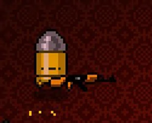
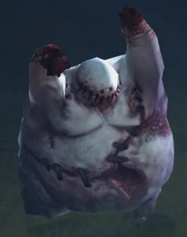
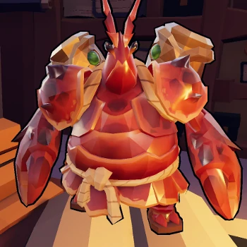
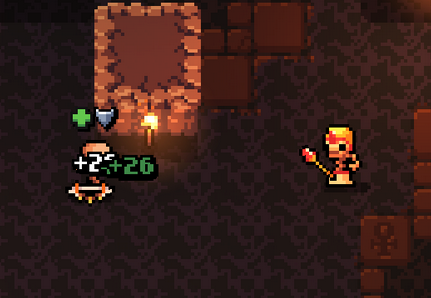

Any enemies goal can fit into one of these 3 categories. These goals are similar to
the player class roles of tank, dps and support, but for enemies.
Attack-Goal-Enemies are enemies with the main and only goal to attack or
damage the player directly or indirectly. This type of enemy is the first thing
everybody thinks of when thinking of enemies in games.
"Most of Enter The Gungeons gundead enemies like the bullet kin, seek out to
inflict pain to the player."

Disrupt-Goal-Enemies are enemies with the goal of disrupting the player in
their intended way of playing the game. Disrupter enemies can be simple, for example
tank-style enemies which will put themselves in harms way or complex, setting up
traps or shifting terrain to disrupt the player. It is important to mention that all
goals can involve attacking or damaging the player, often disrupter enemies will
need to backup the pressure they apply with punishment if the player doesn't abide
to the rules the enemy set up. E.g.: the player gets damaged. So while still being
able to inflict damage to the player, their main goal isn't in damaging the player
but disrupting the player to enable other enemies in the encounter to exceed in
their own goals.

"Diablo III's Grotesques enemy type is an undead enemy that specialices in
having a lot of health and attempting to explode close to the player. This
enemy distracts and blocks the player from firing at weaker targets in the
backlines as well as forcing the player to reposition when they explode."
"Arrogant Lobsters in Gunfire Reborn are backline tanks that will rain
hellfire upon the player, forcing players to push in and focus fire on the
enemy instead of killing weaker enemies in closer proximity."

Support-Goal-Enemies are enemies with the goal of supporting other enemies.
This can include spreading buffs or heals to other enemies.

"High Temple Priests in Archvale will heal and buff nearby enemies to aid them
in battle."